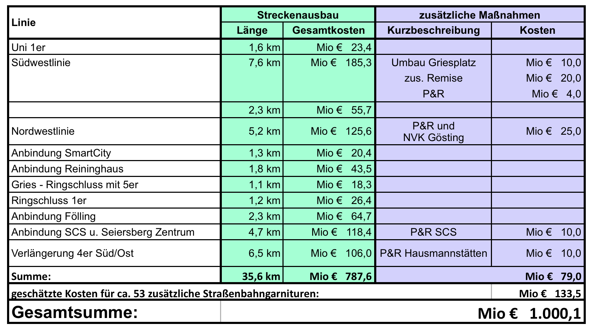

Der Ausbau des öffentlichen Personennahverkehrs in Graz ist dringend notwendig. Es soll nicht nur das bestehende Liniennetz durch Taktverdichtung stärker genutzt, sondern auch neue Strecken gebaut, neue Linienführungen erprobt und somit neue Anreize für den Umstieg auf Bus und Bim gesetzt werden. So werden Verkehrsaufkommen und Feinstaubbelastung reduziert.
Kosten
Für die Errichtungs- und Ausstattungskosten der
zusätzlichen Linien wurden die Abrechnungen der
letzten Straßenbahnausbauten herangezogen und die
Teilabschnitte bewertet. Die Anzahl der Haltestellen, sowie der
benötigten zusätzlichen
Straßenbahngarnituren wurde aufgrund der
durchschnittlichen Haltestellenabstände,
sowie der (unter Berücksichtigung einer notwendigen
Taktverdichtung) erforderlichen Anzahl an Fahrzeugen ermittelt.
Finanzierung
Die Finanzierung des Ausbaues soll, wenn man neben Graz
auch die Umlandgemeinden einbindet,
aus EU-, Bundes- und Landesmitteln erfolgen.
Darüber hinaus können durch die Einführung einer Nahverkehrsabgabe,
Werbung und zweckgebundene Parkgebühren
weitere Mittel bereitgestellt werden.
Ebenso ist anzudenken, die durch diesen
Ausbau besser erschlossenen Gemeinden, die südlich an Graz grenzen, an
der Finanzierung zu beteiligen.

Wagen&Takt
Bei vielen Linien ist eine Taktverdichtung erforderlich, damit der öffentliche Verkehr mehr
angenommen wird.
Um dies umzusetzen müssen neue Fahrzeuge angeschafft und die Fahrpläne optimiert werden.
Diese zusätzlichen Wagen sind vor allem zu Stoßzeiten (Berufsverkehr) sinnvoll,
da hier Wartezeiten für die Fahrgäste wegfallen und verkürzt werden.
Ebenso ist ein Ausbau der NightLine wünschenswert.
Park&Ride
Der Bau von Park&Ride-Plätzen an den Endhaltestellen der
Straßenbahnen und an Nahverkehrsknoten wie in Webling, Wetzelsdorf, Don
Bosco, Gösting, etc.
ist einen sinnvolle Lösung, um den Umstieg vom
motorisierten Individualverkehr auf den öffentlichen Verkehr im Grazer
Stadtgebiet zu steigern. Durch günstig angebotene
Kombitickets, bestehend aus einem Parkschein &
einer Öffi-Karte, kann man den Umstieg sicherlich
noch födern und damit in weitere Folge auch den Individualverkehr in
Graz reduzieren.
Alternative Angebote
Es muss in Graz ein multimodales Verkehrskonzept erstellt werden,
das nicht
nur den öffentlichen Verkehr und den privaten
Individualverkehr berücksichtigt. Es gibt viel mehr Möglichkeiten
- etwa durch E-Mobility (Fahrräder, Mopdes, Autos) -
den VerkehrsteilnehmerInnen an den
zu schaffenden Park&Ride-Anlagen individuelle
Verkehrsmittel anzubieten.
Ebenso müsste vermehrt die Bildung von
Fahrgemeinschaften und Car-Sharing unterstützt und gefördert werden.